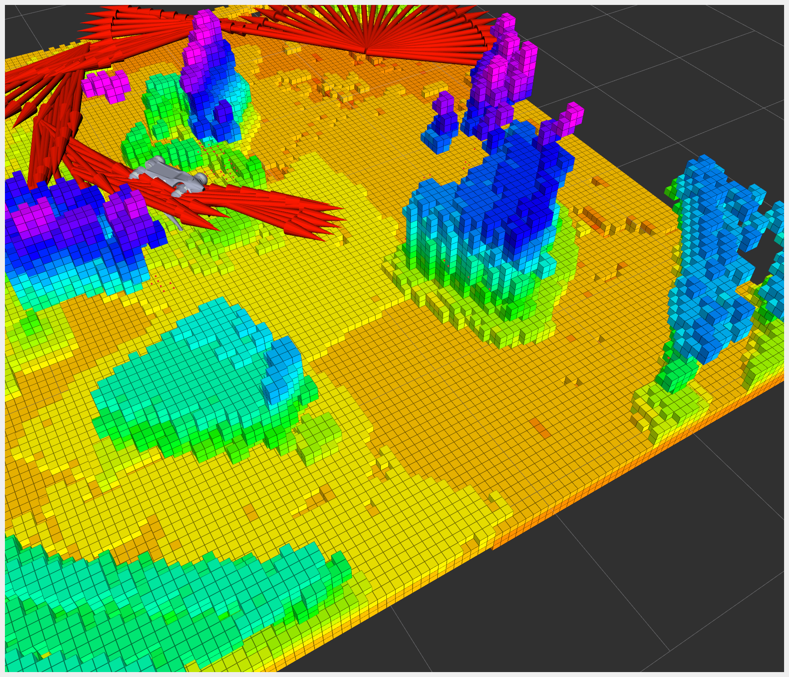

定位与多点导航巡检
融合理论「SLAM / 定位 / 导航原理」：载入 EXP-02 地图，配置 AMCL 初始位姿与 Nav2 参数，编排多个巡检点让 Go2 依序自主到达并避障。验收标准：Go2 依序自主到达巡检点；关键技巧：每点需定位收敛后再出发。
01学习目标
- 用通俗语言讲清三层分工：SLAM 画地图、AMCL 猜我在哪、Nav2 决定怎么走。
- 理解 AMCL 粒子滤波：一群「位置猜测」如何随激光观测淘汰收敛到真实位姿。
- 读懂 Nav2 的规划—控制—避障流水线，以及全向（Omni）运动模型对四足的意义。
- 完成初始位姿标定、Nav2 参数核对、多巡检点编排与依序送达。
- 掌握「定位收敛后再出发」的操作节奏，判断何时可以放心切下一个点。
02原理：SLAM / 定位 / 导航（理论 2 融合）
三个角色一台戏：EXP-02 画好的地图是「城市地图」；AMCL 是「我在地图的哪」的猜谜游戏；Nav2 是「高德导航」——知道地图加知道位置，它负责规划绕障路线并把油门方向盘发给四足。缺任何一个，狗都不是巡检员，只是随机遛弯。
AMCL：一群猜测不断淘汰
AMCL（自适应蒙特卡洛定位）的玩法：撒一把纸屑——在地图各处随机撒 2000 个「我可能在这」的粒子；每个粒子都拿当前激光扫描与地图比对，「如果我真在这，看到的景象对得上吗」，对得上的留下并繁殖，对不上的直接淘汰；几轮之后，所有粒子挤成一团，那团中心就是你的位置。初始一无所知时粒子满图乱飞，一旦你说「我其实在充电桩旁边」（2D Pose Estimate 给初值），粒子团会唰地收敛——这就是「定位收敛」的直观含义，也是「每点需收敛后再出发」的科学依据：粒子还没抱团就发车，狗会拿着错误位置自信地撞墙。
Nav2：高德地图导航的机器人版
Nav2 收到目标点后干三件事：①全局规划（在栅格地图上画出理论最优路线）→ ②局部控制（controller 按周期算每一步往哪迈，go2_ros2_sdk 参数里 controller_frequency 为 3.0Hz，匹配四足步态节奏）→ ③实时避障（代价地图里突然出现人/纸箱，局部规划当场绕开）。四足 Go2 可横移平移，所以用 nav2_amcl::OmniMotionModel（全向运动模型）比差速小车模型更贴合；多点巡检则交给 nav2_waypoint_follower——「把这串点按顺序走完，每到一个可以停一停」。

03硬件与材料
| 关键参数 | 本课示例值（go2_ros2_sdk nav2_params） | 含义 |
|---|---|---|
| robot_model_type | nav2_amcl::OmniMotionModel | 四足可横移，全向模型比差速模型更准 |
| max_particles / min_particles | 2000（官方默认量级） | 猜测数量：太少跟不上、太多耗算力 |
| laser model | likelihood_field | 用「离墙面远近」打分，比波束法抗噪声 |
| controller_frequency | 3.0 Hz | 控制循环 3 次/秒，匹配四足步态节奏 |
04操作步骤
map.yaml 进导航工作空间
RViz 2D Pose Estimate 对准桩位
粒子抱团 + 激光贴合墙体
Waypoint 工具逐点投放 P1~Pn
follow_waypoints + 每点收敛判定
- 载图：把 map.yaml / map.pgm 放到导航参数指定路径，启动
ros2 launch go2_robot_sdk robot.launch.py（内置 slam_toolbox、Nav2、RViz），并停掉建图节点——建图与定位不要同时发 map，静态地图由 map_server 独家供图。 - 给初值：RViz 点 2D Pose Estimate，在地图上从充电桩位置拖出方向箭头——箭头起点放狗的真实站位、朝向拖准；AMCL 粒子应从满图散点唰地抱团。
- 判定收敛（技巧）：让狗小幅前后挪 0.2m——激光轮廓与地图墙体贴合不重影、粒子团紧致，才算收敛；没收敛就再给一次初值。
- 编排路线：用 RViz Waypoint / Nav Through Points 工具在地图上依次落点 P1~Pn；或直接调用 follow_waypoints 服务把姿态数组一次下发。
- 依序执行：狗自主逐点到达；每到一点等待定位收敛（粒子不发散、朝向稳定）再执行下一点；途中人为放纸箱，验证局部避障绕行。
- 留痕：记录每个点的到达时刻与偏差，任何一点「冲过头/到错位」都回查 AMCL 粒子状态与 /amcl_pose 协方差。
05关键命令
AMCL 参数与 waypoint_follower 来自 Nav2 官方文档；launch 与参数路径沿用 go2_ros2_sdk。
# ① 启动（内置 map + AMCL + Nav2 + RViz；建图节点需按步骤停掉） export ROBOT_IP=192.168.123.161 export CONN_TYPE=cyclonedds ros2 launch go2_robot_sdk robot.launch.py # ② RViz 操作（鼠标）：2D Pose Estimate 给初值 → 等粒子抱团 # nav2_params.yaml 关键片段（沿 Nav2 官方结构）： # amcl: robot_model_type: "nav2_amcl::OmniMotionModel" # 四足全向 # max_particles: 2000 laser_model_type: "likelihood_field" # controller_server: controller_frequency: 3.0 # 3Hz 控制循环 # ③ 多点巡检：一次下发巡检点队列（nav2_waypoint_follower 服务） ros2 service call /follow_waypoints nav2_msgs/srv/FollowWaypoints \ "{poses: [{header: {frame_id: map}, pose: {position: {x: 2.1, y: 0.6}, orientation: {w: 1.0}}}, {header: {frame_id: map}, pose: {position: {x: 4.0, y: 2.5}, orientation: {w: 1.0}}}]}" # 也可以不用命令行：RViz 顶部 Waypoint 工具逐点投放，效果相同 # ④ 监控定位质量（收敛判据看这两个） ros2 topic echo /amcl_pose --once # 协方差椭圆应越缩越小 ros2 topic echo /particle_cloud --once # 粒子云：抱团=收敛，满图飞=未收敛
/amcl_pose 的协方差会先涨（起步扰动）再降；看到协方差回落、粒子抱团再发车，就是「定位收敛后再出发」在数据上的样子。06动画：粒子收敛与多点巡检
07互动：巡检点编排与到达判定
试试「P2 → P1」和「P1 → P2」两种顺序：路线总长会明显不同——巡检编排不是随手点，顺序决定里程、里程决定电量与耗时；判定区的黄色警告对应本实验技巧：出发顺序再好，到点不等收敛照样到错位。
08常见问题
09拓展阅读
- nav2_waypoint_follower 官方能力：「依序导航到一组 waypoints」，每点可插回调（拍照等动作）——EXP-04 的「到点拍照」就挂在这里。
- Nav2 AMCL 官方配置：robot_model_type、max_particles、likelihood_field、initialpose 的完整语义——https://docs.nav2.org/configuration/packages/configuring-amcl.html
- nav2_simple_commander（Basic Navigator）：Python API 按「goToPose → wait → followWaypoints」编排流程，比手点 RViz 更适合做全自动巡检脚本。
- 粒子云可视化：RViz 订阅 particle_cloud，把「抱团过程」录屏，是理解粒子滤波最直观的一手素材。
- 回充对接（预告）：Nav2 Docking Framework（opennav_docking，插件如 opennav_docking::SimpleChargingDock）负责巡检结束自主回桩——EXP-04 展开。